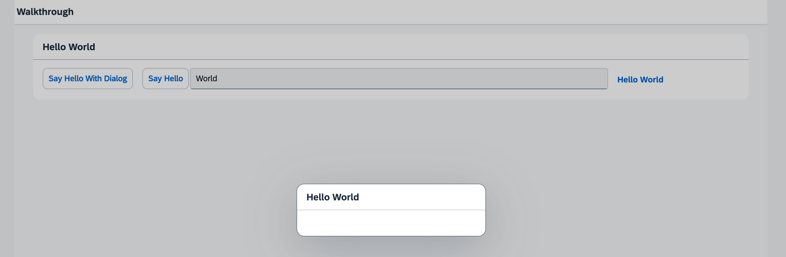

Fragments are light-weight UI parts (UI subtrees) which can be reused but do not have any controller. This means, whenever you want to define a certain part of your UI to be reusable across multiple views, or when you want to exchange some parts of a view against one another under certain circumstances (different user roles, edit mode vs read-only mode), a fragment is a good candidate, especially where no additional controller logic is required.
A fragment can consist of 1 to n controls. At runtime, fragments placed in a view behave similar to "normal" view content, which means controls inside the fragment will just be included into the view's DOM when rendered. There are of course controls that are not designed to become part of a view, for example, dialogs. But even for these controls, fragments can be particularly useful, as you will see in a minute.
We will now add a dialog to our app. Dialogs are special, because they open on top of the regular app content and thus do not belong to a specific view. That means the dialog must be instantiated somewhere in the controller code, but since we want to stick with the declarative approach and create reusable artifacts to be as flexible as possible, we will create an XML fragment containing the dialog. A dialog, after all, can be used in more than one view of your app.

You can view and download all files at Walkthrough - Step 16.
<mvc:View
controllerName="ui5.walkthrough.controller.HelloPanel"
xmlns="sap.m"
xmlns:mvc="sap.ui.core.mvc">
<Panel
headerText="{i18n>helloPanelTitle}"
class="sapUiResponsiveMargin"
width="auto" >
<content>
<Button
id="helloDialogButton"
text="{i18n>openDialogButtonText}"
press=".onOpenDialog"
class="sapUiSmallMarginEnd"/>
<Button
text="{i18n>showHelloButtonText}"
press=".onShowHello"
class="myCustomButton"/>
<Input
value="{/recipient/name}"
valueLiveUpdate="true"
width="60%"/>
<FormattedText
htmlText="Hello {/recipient/name}"
class="sapUiSmallMargin sapThemeHighlight-asColor myCustomText"/>
</content>
</Panel>
</mvc:View>We add a new button to the view to open the dialog. It simply calls an event handler function in the controller of the panel's content
view. We will need the new id="helloDialogButton" in Step 28: Integration Test with OPA.
It is a good practice to set a unique ID like helloWorldButton to key controls of your app so that can be identified easily. If
the id attribute is not specified, the OpenUI5 runtime generates unique but changing ID like "__button23" for the
control. Inspect the DOM elements of your app in the browser to see the difference.
<core:FragmentDefinition
xmlns="sap.m"
xmlns:core="sap.ui.core">
<Dialog
id="helloDialog"
title="Hello {/recipient/name}"/>
</core:FragmentDefinition>We add a new XML file to declaratively define our dialog in a fragment. The fragment
assets are located in the core namespace, so we add an
xml namespace for it inside the
FragmentDefinition tag.
The syntax is similar to a view, but since fragments do not have a controller this attribute is missing. Also, the fragment does not have any footprint in the DOM tree of the app, and there is no control instance of the fragment itself (only the contained controls). It is simply a container for a set of reuse controls.
sap.ui.define([
"sap/ui/core/mvc/Controller",
"sap/m/MessageToast"
], (Controller, MessageToast) => {
"use strict";
return Controller.extend("ui5.walkthrough.controller.HelloPanel", {
onShowHello() {
// read msg from i18n model
const oBundle = this.getView().getModel("i18n").getResourceBundle();
const sRecipient = this.getView().getModel().getProperty("/recipient/name");
const sMsg = oBundle.getText("helloMsg", [sRecipient]);
// show message
MessageToast.show(sMsg);
},
async onOpenDialog() {
// create dialog lazily
this.oDialog ??= await this.loadFragment({
name: "ui5.walkthrough.view.HelloDialog"
});
this.oDialog.open();
}
});
});Using async/await, we handle the opening of the dialog asynchronously every time the event is
triggered.
If the dialog fragment does not exist yet, the fragment is instantiated by calling the loadFragment API. We then store the
dialog on the controller instance. This allows us to reuse the dialog every time the event is triggered.
To reuse the dialog opening and closing functionality in other controllers, you can create a new file
ui5.walkthrough.controller.BaseController, which extends sap.ui.core.mvc.Controller, and put
all your dialog-related coding into this controller. Now, all the other controllers can extend from
ui5.walkthrough.controller.BaseController instead of sap.ui.core.mvc.Controller.
# App Descriptor
appTitle=Hello World
appDescription=A simple walkthrough app that explains the most important concepts of OpenUI5
# Hello Panel
showHelloButtonText=Say Hello
helloMsg=Hello {0}
homePageTitle=Walkthrough
helloPanelTitle=Hello World
openDialogButtonText=Say Hello With DialogWe add a new text for the open button to the text bundle.